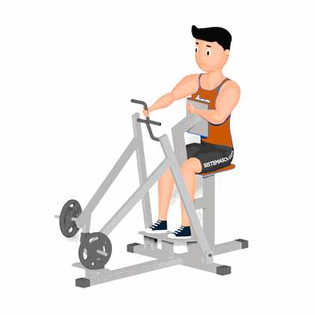

Remada Articulada Unilateral Neutra

O exercício pode-se corrigir eventuais assimetrias musculares, força muscular e, principalmente, recomendável aos portadores de desvios posturais. É um movimento bastante seguro, que pode fazer parte do treino de praticantes de todos os níveis.
Ficha Técnica
Tipo: Musculação
Grupo Muscular: Costas
Aparelho: Nenhum
Músculos: Nenhum
Como realizar
- Sente-se no banco e apoie o peitoral no encosto e mantenha a coluna reta;
- Posteriormente segure um dos pegadores com o punho neutro;
- Realize o movimento de puxada em direção ao seu corpo, nessa etapa o segredo é concentrar a força no cotovelo, uma vez que aumentará a tensão mecânica nas costas;
- Logo depois, conduza lentamente os pegadores à posição inicial.
 RC STORE
RC STORE